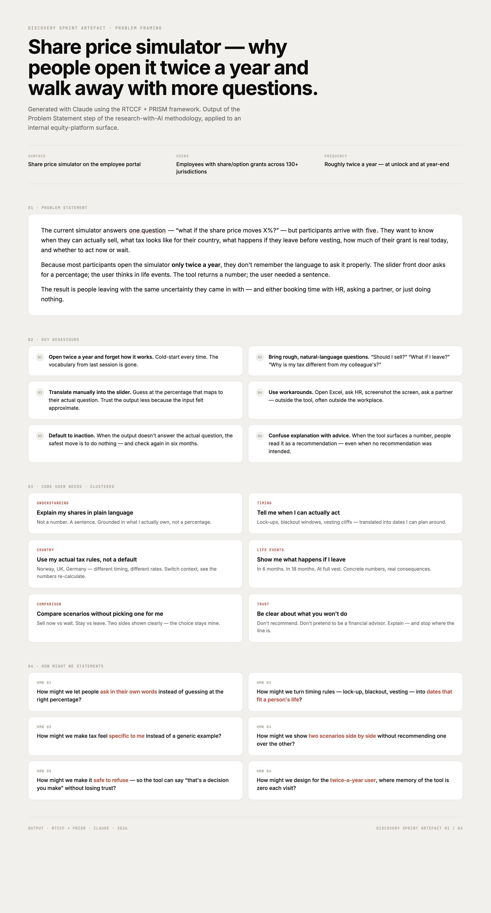
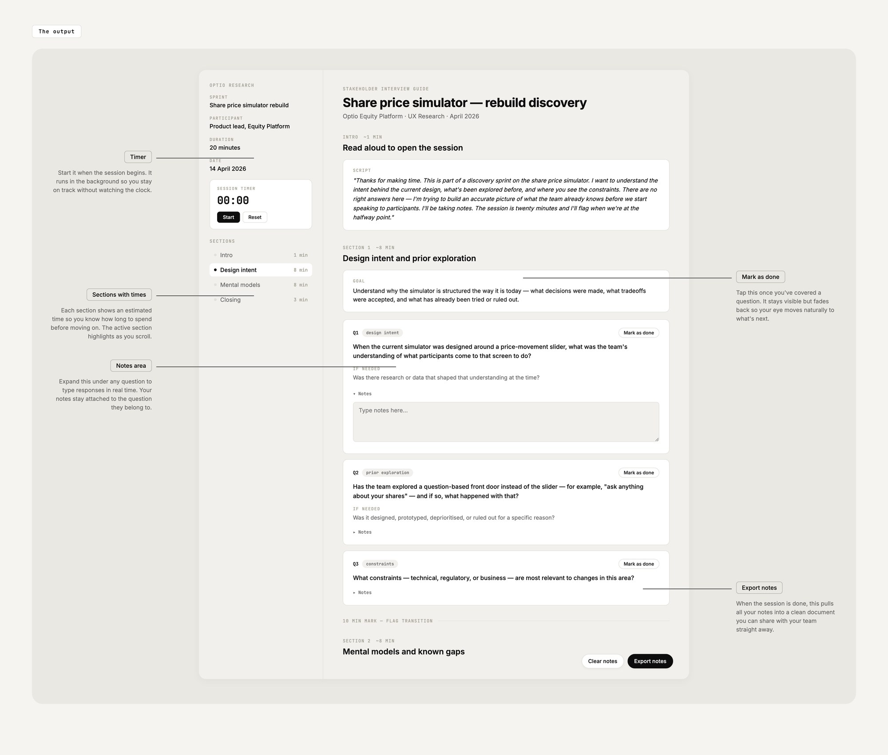
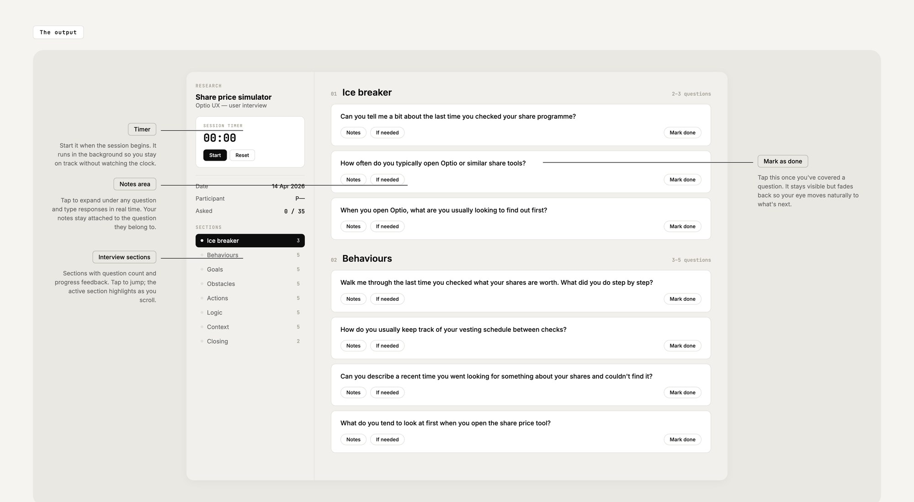
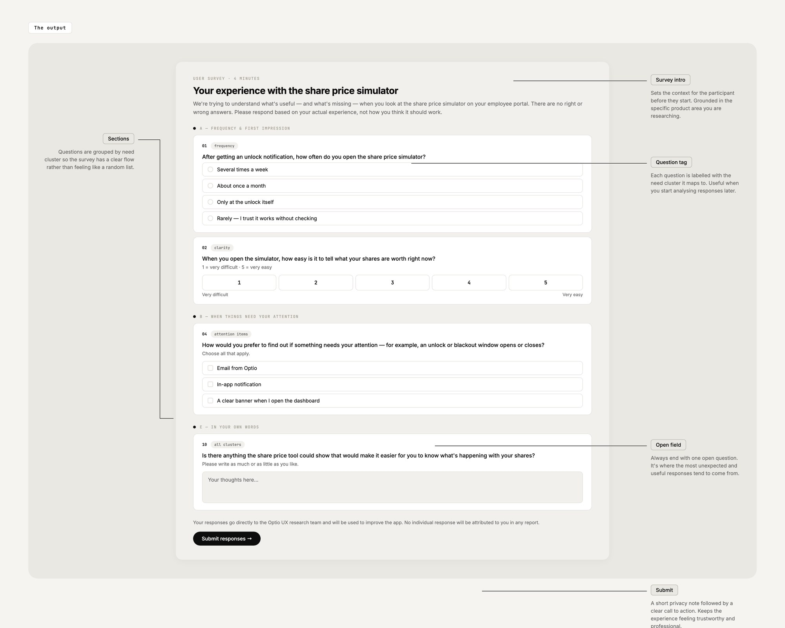
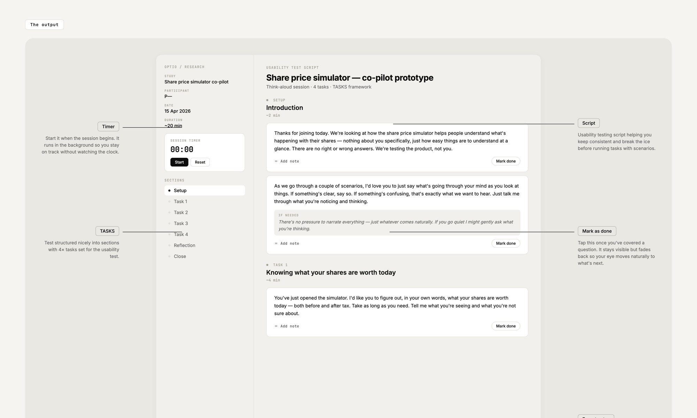
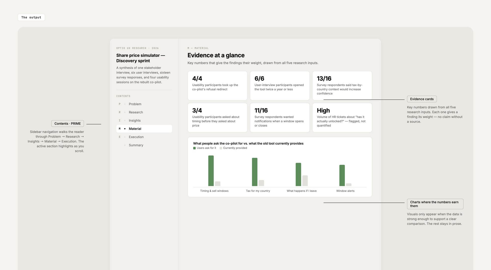
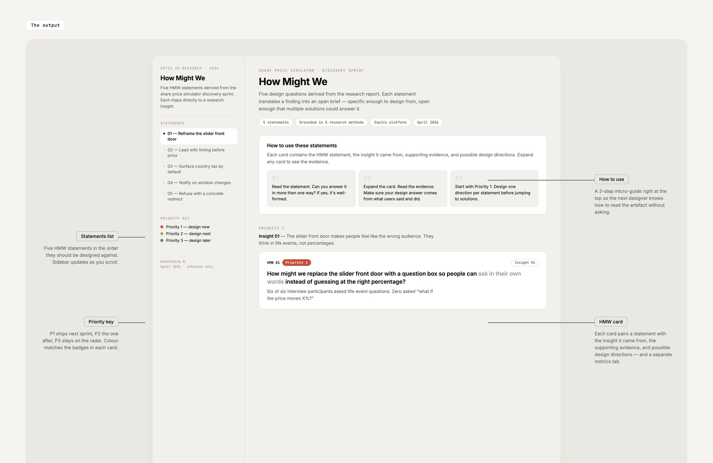
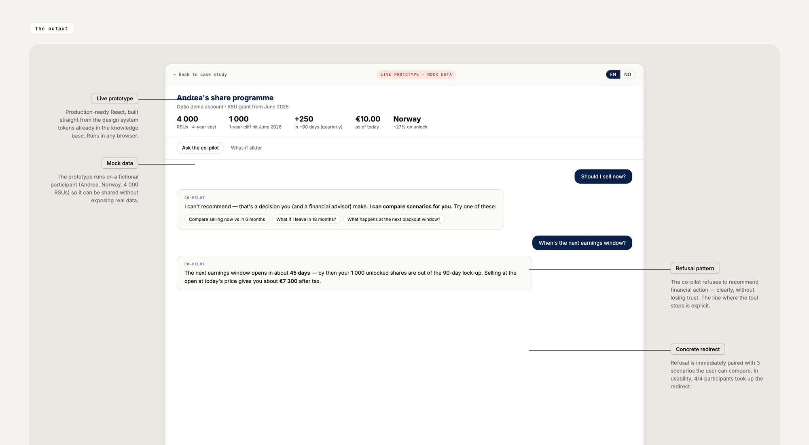
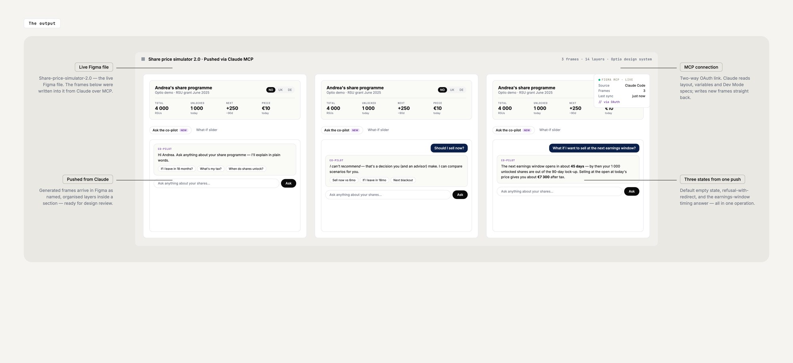
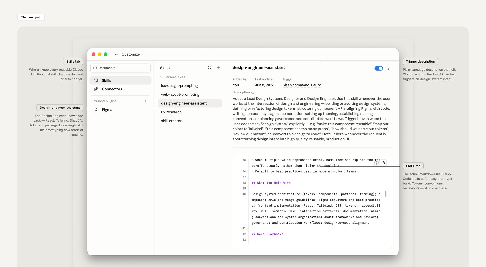

From problem statement to working prototype — one methodology, ten artifacts, AI at every step.
Year
2026 · in use
run on every discovery cycle
Stack
Claude · ChatGPT · Claude Code · Cursor · Figma MCP · Netlify
My role
Solo · using the knowledge from an AI design bootcamp, designed the workflow
In one line
Knowledge-grounded AI + a framework per step = research, ideation and a built prototype in days, not weeks.
Open Claude or ChatGPT, ask for help, get generic mush. Why? Two reasons. The AI doesn't know your product — so it makes things up. Your prompt has no shape — so the output has no shape.
Fix those two and the whole thing changes. So I built a workflow that does exactly that.
“Onboard the AI. Wrap every step in a framework. Ship something designed, not a paragraph.”
Step one: onboard the AI
Imagine hiring a freelancer who doesn't know your product. You wouldn't expect great work. The AI is the same. So I made five little reference packs and point the assistants at them before anything else.
- The product. Overview, personas, screener responses, prior interview transcripts, the problem statement. So the AI knows who uses this thing and what we've already tried.
- The design system. Tokens, components, the patterns the team uses. Outputs come back looking like the actual product, not generic AI mockups.
- The dev stack. React, Tailwind, ShadCN, GitHub habits. So when the AI builds, the engineers can actually read it.
- iOS. Apple HIG, iPhone screen sizes, the safe areas you always forget. Keeps mobile work honest.
- Web. Component patterns, responsive rules, WCAG 2.1 AA accessibility. Same job as iOS, for the browser.
Six steps that take a rough brief to a stakeholder-ready report
Same shape every time. A framework decides the structure. RTCCF wraps it into a prompt. PRISM follow-ups iterate until the output is the artifact, not a draft. Every prompt I run lives in the Prompt Library — see that case for the full prompt text.
-
01Problem Statement · PRISM
Turn a hunch into a real problem statement (plus the HMWs that come from it)

You start with something rough — “people seem confused on that screen.” PRISM runs five moves on it: stress-test it, shift it across user types, break it into observable behaviours, turn behaviours into needs, generate HMWs. Out the other end: a real problem statement, the behaviours behind it, clean HMW cards. Enough to scope the whole sprint.
-
02Stakeholder Interview · Live HTML guide
Before you talk to a single user, you talk to the team

The AI writes the interview guide grounded in the problem statement — no leading questions, no “tell me about your role” fluff. The output is a live HTML doc with a timer, a notes field per question, and an export button. You run the actual meeting from the doc itself. No note-taking app on the side.
-
03User Interview · BGOALC
Same shape, this time with real users

BGOALC keeps the questions about real experiences instead of opinions. “Walk me through the last time you did this” instead of “would you?” Six question slots, one per dimension — Behaviours, Goals, Obstacles, Actions, Logic, Context — all scoped to the exact surface being researched.
-
04User Survey · Deployable form
Quantify the patterns. Ship a live form by dragging a file

The AI writes the survey in plain language — multiple choice, rating scales, one open question at the end. Then the magic bit: the file deploys to Netlify by dragging it in. Live link to share, responses to a dashboard. Quant answers in days, not weeks.
-
05Usability Test · TASKS
Watch what people actually do, not what they say they'd do

TASKS keeps the script focused on behaviour. Five slots per task: what they were asked, how they approached it, where they hesitated, what they didn't know, what counts as success. The AI writes it grounded in your actual product flow — not a “sign-up flow” template from the internet.
-
06Research Report · PRIME
Fold five sources into one document a stakeholder reads with no preamble

PRIME — Problem, Research, Insight, Material, Execution. The AI synthesises everything before it: stakeholder interview, user interviews, survey data, usability findings. Output is a designed PDF with a sidebar TOC, charts where the numbers earned them, quotes pulled from actual transcripts. Not a chat transcript. A report.
One bridge artifact: turn every research insight into a How Might We card the team can design against
The report is the end of phase one and the start of phase two. The HMW artifact is the bridge from “here's what we learned” to “here's what we'll build.”
-
07HMW · One card per insight
An interactive guide designers actually open in the next sprint

Feed the report back to the AI. It writes one HMW card per insight — priority badge (red/amber/blue), evidence and quotes on one tab, success metrics on another. Nothing invented; every claim traces back to the report. Designers walk in with a working reference, not a Notion page they have to translate.
Three steps that turn HMWs into a working React prototype — and push the result back into Figma
Prototyping isn't a separate room from research and design. It's the same workflow, same prompts, same knowledge bases. By the time you get here, Claude already knows the design system, the user behaviours and the priority HMW — so the React build starts where research ended, not from a blank file.
-
08Claude Code Prototype · RTCCF + PRISM
HMW → 3 ideas → 1 React build → PRISM-iterated until it runs

Pick the highest-priority HMW. One RTCCF prompt: give me 3 distinct ideas. You pick one. Another prompt sends it to Claude Code: build it in React + Tailwind using the design system tokens already loaded. PRISM follow-ups iterate one thing at a time. The output is a prototype that runs in a browser, not a mockup.
-
09Figma MCP · Two-way design ↔ code
Claude reads your Figma file — and pushes the new prototype back into it

Figma MCP (Model Context Protocol) connects Figma to Claude so the AI accesses real design files — layout, variables, screenshots, Dev Mode specs. Desktop MCP runs locally and reads what's open. Remote MCP runs in the cloud and does both directions — Claude can push the new prototype back into Figma over OAuth. Claude stops being a translator and starts being a design operator inside Figma.
-
10Claude Code Skills · Reusable behaviour
Package the whole setup so the next session starts where this one ended

Last piece. I packaged the whole Design Engineer setup as a SKILL.md file Claude Code reads at runtime. Every new prototype session inherits the same context automatically. No re-pasting, no drift. Same setup, every time.
Days, not weeks. And the prototype starts where the research ended — not from a blank file.
The thing isn't faster because the AI is smarter. It's faster because the work I used to redo every time — relearning my own prompt, re-explaining the product, re-translating research into a design — is now structured. The first artifact takes the same time it used to. By the second, you're shipping in an afternoon. By the time you reach prototyping, Claude already knows the design system, the user behaviours and the priority HMW. The React build picks up where research stopped.